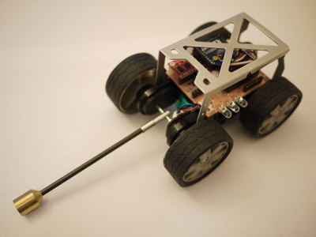

Bio-Inspired Tailed Robotics for Terrestrial Locomotion
Overview
No human-engineered robot can negotiate terrain like an animal. We explore the mechanisms that terrestrial animals use to scramble over irregularly distributed debris with a low probability of foot contact. One mechanism that is particularly interesting is the inertial advantage provided by an active tail.
Figure 1: Overlay plot of a lizard jumping off a low-friction surface. Note the use of tail indicated by the green line during flight, the near constant body angle indicated by the blue line, and the successful landing on the wall.
Geckos that fall upside-down from the underside of a leaf swing their tails around producing the fastest zero-angular momentum righting
response yet observed to position themselves in a gliding posture. Tail movements during gliding appear to steer and translate the gecko. We have also explored how the pitch angle of an Agama lizard can be regulated midair through the combination of feedback and an active tail. With this inspiration, we seek to design an active tail for the next generation of mobile robots.
 Figure 2: Tailbot |
Figure 3: Tailbot with cover |
The technical objectives of this research are as follows:
- Robot sensing and tail control in a planar setting
- Robot sensing and tail control in multiple degrees of freedom
- Scaling considerations for the design of a tailed robot
- Intelligently coordinated inertial and ground reaction forces
FIgure 4: Tailbot's circuit board
Related Publications
- E. Chang-Siu, J. Lunenberg, M. Tomizuka, ”Improvements to Phenomenologically Modeled Behavior of Shape Memory Alloys,” ASME Conf. Proc. 2009, 485 (2009), DOI:10.1115/SMASIS2009-1345.
- Chang-Siu, Evan; Libby, Thomas; Tomizuka, Masayoshi; Full, Robert J., "A lizard-inspired active tail enables rapid maneuvers and dynamic stabilization in a terrestrial robot," Intelligent Robots and Systems (IROS), 2011 IEEE/RSJ International Conference on, pp.1887-1894, 25-30 Sept. 2011, doi: 10.1109/IROS.2011.6094658.
- Evan; Tomizuka, Masayoshi; Kong, Kyoungchul, "Time-varying complementary filtering for attitude estimation," Intelligent Robots and Systems (IROS), 2011 IEEE/RSJ International Conference on, pp.2474-2480, 25-30 Sept. 2011, doi: 10.1109/IROS.2011.6094432.
- T. Libby, T. Y. Moore, E. Chang-Siu, D. Li, D. J. Cohen, A. Jusufi, and R. J. Full, "Tail-assisted pitch control in lizards, robots and dinosaurs," Nature, vol. 481, no. 7380, pp. 113-230, doi:10.1038/nature10710.
Researchers
Chang-Siu, Evan |